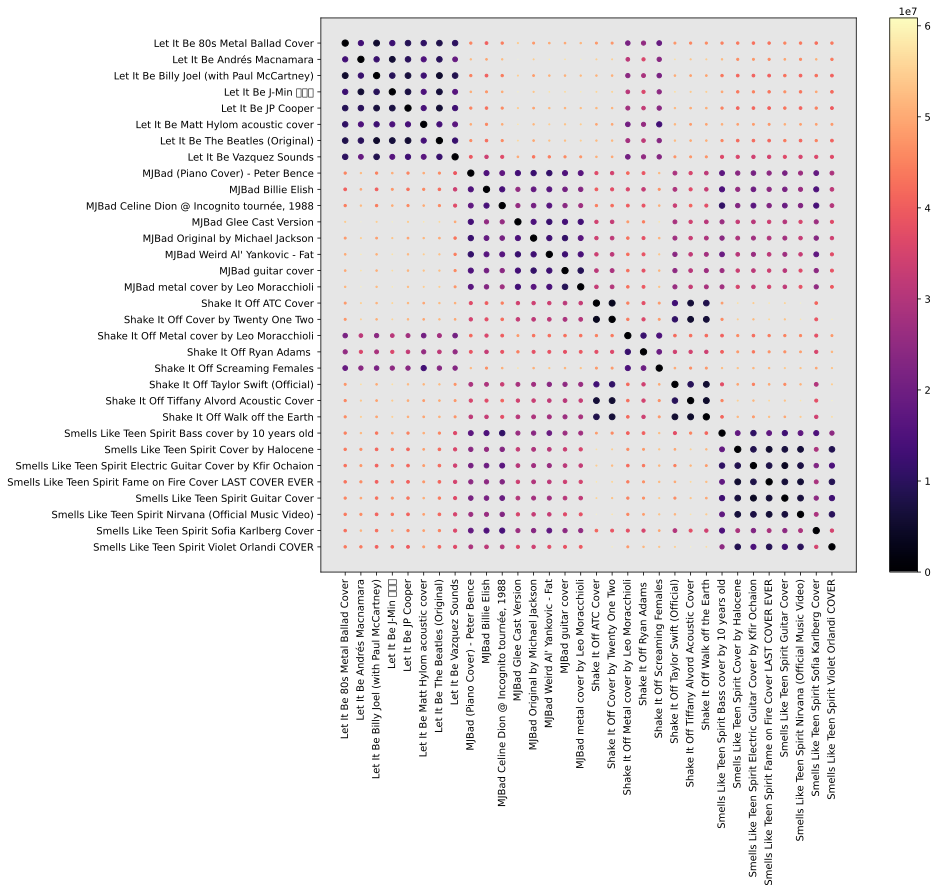

Assignment 4: Fair Elections of Pop Stars (60 Points)
Chris Tralie
Overview / Logistics
The purpose of this assignment is to give you practice with recursion and ideas from permutation theory/sorting in a fun application to which the whole class has contributed: fair elections of pop stars. Each member of the class ranked a subset of pop stars at the beginning of the course. In this assignment, we will define mathematically an optimal "average ranking" that incorporates everyone's choices in a fair and even way, and we will explore computational issues that arise when we attempt to create algorithms to compute this average ranking.
Though this is a pretty whimsical application of election theory, hopefully it will get you thinking about some of the computational issues involved with ranked choice voting as people begin to reckon with the myriad issues we have with fairness in our current democractic system. Click here to read a recent Time article on this topic.
Click here to review notes on Kendall-Tau and Kemeny Optimal rankings.
Learning Objectives
- Implement an exact and an approximate version of the same algorithm.
- Use recursion to implement both efficient and brute source solutions to problems.
- Manage permutations, orders, and sorts in arrays.
- Be introduced to the the notion of an algorithm reduction.
What To Submit
Submit your file ranking.py to canvas
Programming Tasks
Click here to download the starter code for this assignment. You will be editing ranking.py. Code has been provided for loading in the rankings and plotting a dimension reduced version of all pairwise ranking comparisons.
Rankings As Numbers
To keep things simple, if we have N items we're ranking, we'll label them from 0 to N-1 in some arbitrary order. In this assignment, we'll be using the pop star votes that students cast, and we'll use the following labels:
0: Taylor Swift 1: Drake 2: Dua Lipa 3: Miley Cyrus 4: Michael Jackson 5: Nirvana 6: The Beatles 7: Journey
So, for instance, if someone gives the rankings
- Michael Jackson
- Dua Lipa
- Drake
- Miley Cyrus
- Nirvana
- Journey
- The Beatles
- Taylor Swift
then this would correspond to the list 4, 2, 1, 3, 5, 7, 6, 0. I have intentionally kept the list small so we can explore all permutations of this list in some later tasks.
In the starter code, you will see a method called load_permutations which loads the class rankings from a text file that's been provided in the starter code.
There is a list of 8 strings representing pop star names. Then, the rankings of each student are represented as arrays of numbers between 0 and 7 which index this array. All of the rankings are stored in a dictionary, where the key is the student's name as a string, and the value is such a list. The data is shown below
Brute Force Kendall-Tau Distance (10 Points)
Fill in the method kendall_tau to compute the Kendall-Tau distance between two rankings. For N rankings, your method should run in O(N2) time and use O(N2) space.
To test this on the example in the background, you can write the code
If this works, you should see an output of 7, as explained in the background. For a more comprehensive example, you can run the method plot_mds_distances, which will use a method known as multidimensional scaling (MDS) to come up with a set of 2D coordinates that best preserve the Kendall-Tau distances between every pair of raters (though it will usually introduce some distortion, for a similar reason to the fact that it's impossible to create a square map of the earth without stretching some areas). If you run the code below
You should see the following plot

You can study this plot to choose a companion for your next trip to a live concert! Or perhaps an assignment buddy with the same playlist going in the background...
Diameter (7 Points)
As hinted by the MDS example above, the The Kendall-Tau distance is truly a distance, in the sense that it is a metric space. Even though we can't perfectly visualize it spatially without error, we can still reason geometrically about it with numerics. For instance, we can search for the pairs of rankings that are close to each other in this space. The closest raters are Isabelle/Cole and Aleni/Tyler, both pairs of whom are at a distance of two from each other. For example, Zach and Tim are
They agree except for the the pairs(7, 1) (Journey vs Drake) and (1, 0) (Taylor Swift vs Drake).
Actually, we see here some of the distortion that's introduced in the MDS plot above, because, for instance, Evan/Phillip appear closer together than Aleni/Tyler and Isabelle/Cole do, even though Evan/Phillip are each at a distance of 4 from each other.
Aside from closest rankings, we can also define the opposite notion of the two ratings that are furthest apart from each other, which we refer to as the diameter.
Your Task
Write a methodget_diameter that takes in the rankings dictionary, and which prints out the two people who achieve the diameter, along with their rankings and the Kendall-Tau distance between them. For M people who rated and N pop stars, your method should run in O(M2 N2) time.
If this worked properly, you should see that Eugen and Cole are the most different, with 23 pairwise disagreements.
This means that they only agree on 5 different pairwise elections:- (4, 6): Michael Jackson comes before The Beatles
- (4, 1): Michael Jackson comes before Drake
- (0, 1): Taylor Swift comes before Drake
- (3, 1): Miley Cyrus comes before Drake
- (2, 1): Dua Lipa comes before Drake
Hint: You might take inspiration by studying the code in plot_mds_distances, which does some similar preprocessing to the code you will have to write.
Average Rank Aggregation (8 Points)
We discussed the Kemeny optimal rank aggregation, but there is a simpler technique we can try first to incorporate everyone's votes. We can think of every ranking as giving rise to a place number associated to each index. For example, if a number shows up at index 6 in the a permutation, we give it a place of 7 (since we're zero-indexed). We then simply average these place numbers to get a final average place. For example, in our rankings, we get the following averages:
which leads to these results in the election if we sort in ascending order of average place number
Expressed as a list, this corresponds to the permutation [4, 6, 5, 3, 2, 7, 1, 0]
Your Task
Create a method get_average_rankings that accepts the parameters stars and raters and which prints out the pop stars in the order of their average aggregated rankings. For N choices and M rankings, your method should run in O(MN + NlogN) time. You don't have to use your own sorting method for this part! You may use a python or numpy sorting method to help with this if you'd like (this is where the NlogN term will come from).
Brute Force Kemeny Optimal Ranking (15 Points)
The above answer seemed to match peoples' preferences, but what about the Kemeny Optimal rank? (click here to review notes on this). Unfortunately, there is no known way to compute this efficiently. But we can create a brute force scheme to recursively examine every permutation and find the one which minimizes the sum of the Kendall-Tau distances to all rankings. In this case, this is doable, because we only have 8 alternatives, and 8! = 40320, so we can just crunch through this number of possibilities (though many more pop stars than this would be intractable).
Your Task
Create a recursive method which computes the Kemeny Optimal ranking by trying all possible permutations. You can use the permutation enumeration code from the sorting module as a starting point. You will probably want to pass a python list or dictionary by reference recursively that stores the minimum cost seen so far, as well as a copy of the permutation that achieved that cost (you can use list.copy() to copy it over).
If this works correctly, you should get the following permutation as the one that minimizes the sum of Kendall-Tau distances:
[4, 6, 5, 3, 2, 1, 7, 0]
Let's look at what characters these are and compare them side by side with the average ranking
| Average Raking (122) | Kemeny Optimal (121) |
Interestingly, the trends are the same, but if we swap Journey and Drake, we get one more pairwise agreement with everyone overall! Specifically, if we sum the Kendall-Tau distances of the average ranking to all rankings, we get 122 diagreements with the class as a whole. But the Kemeny optimal one has only 121 disagreements. Therefore, though it is very close, the Kemeny optimal rank has four fewer disagreements with everyone in the class than the average ranking. And that's all there is to it!
Efficient Kendall-Tau (15 Points)
We've been rolling with the O(N2) algorithm so far, but it's possible to compute the Kendall-Tau distance in O(N log N) time using merge sort. Review the technique here for how to do this.
Your task: Implement a method kendall_tau_fast which computes the Kendall-Tau distance between two rankings in O(N log N) time.
Comparing Cover Songs by Rankings (5 Points)
We will now explore an application that requires an efficient implementation of Kendall-Tau to work. A "cover song" or "version" of a tune is a different rendition of that tune, often performed by a different group. The version can use different instruments, change the tempo, changing the key, go a-capella, go acoustic, change the language, change the genre, add and delete sections, etc. But something about the tune makes it still a version of the original.
A particularly interesting computational challenge is to automatically determine whether two tunes are versions of each other using code that processes digital audio. I contributed to the state of the art of this problem, which made up about 1/3 of my Ph.D. thesis back in 2017. Click here to see some slides I made recently on this topic for Dr. Abrahams's "What Is Music" class, and click here to view an interactive web demo I made on my research.
In this task, I've gathered 32 different tunes: 4 groups of 8 versions from each of Michael Jackson's "Bad", Taylor Swift's "Shake It Off", The Beatles's "Let It Be", and Nirvana's "Smells Like Teen Spirit". For each tune, I've computed the similarity of that tune to each of 15,000 tunes in the "datacos test set" using 2D Fourier Magnitude shingles on CREMA pitch features. In a nutshell, the features will be similar between two versions if those versions share similar note patterns, up to a key change and tempo change.
What I did next was, for each tune, sort the 15,000 tunes in the database in decreasing order of similarity. This gives me a ranking of the songs in the database. Then, if we compare two different tunes by the Kendall-Tau distance between their rankings, we can get a measurement of similarity between those tunes, even if we have no idea what the tunes actually are in the database!
Your Task
Given the 15,000 length rankings of the 32 tunes in the database, create a method compare_tunes that computes a 32x32 matrix D, where D[i, j] is the Kendall-Tau distance between the rankings of tune i and tune j. To get the rankings, you can use the following code to load tunes.json:
Each element of the tunes list consists of a dictionary with 4 keys:
name: The title of the tuneversion: The title of the versionurl: A URL to find it on youtube-
rankings: A permutation of similarities to tunes in the datacos test set. These are the permutations you'll be comparing with the Kendall-Tau distance
The name/version/url are just for fun; the rankings are what you need here.
If this is working properly, you should see that tunes that are versions of each other should have much smaller Kendall-Tau distances than tunes that aren't. Here's a method that you can use to plot the Kendall-Tau distances and verify this:
And here's what the results should look like if this is working properly:
The size and color of the dots indicate how similar two pairs are; larger and darker dots indicate higher similarity (lower Kendall-Tau distance).